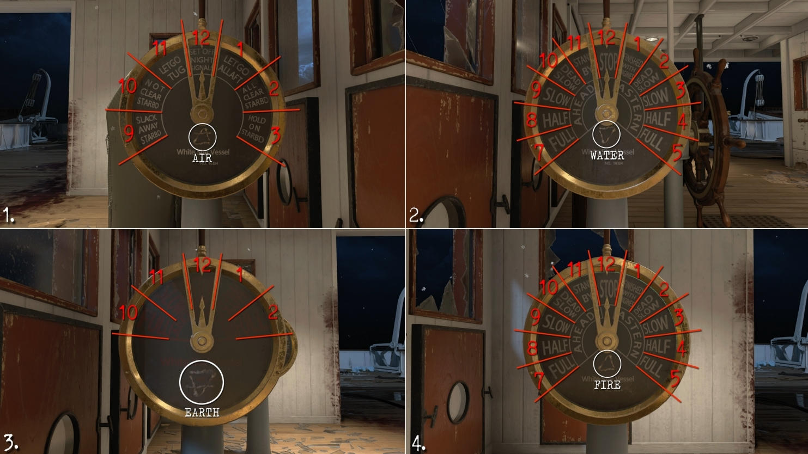
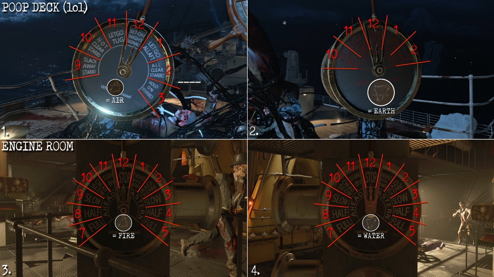
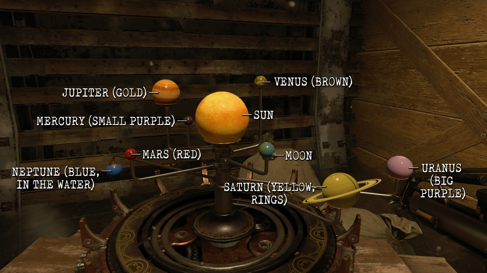
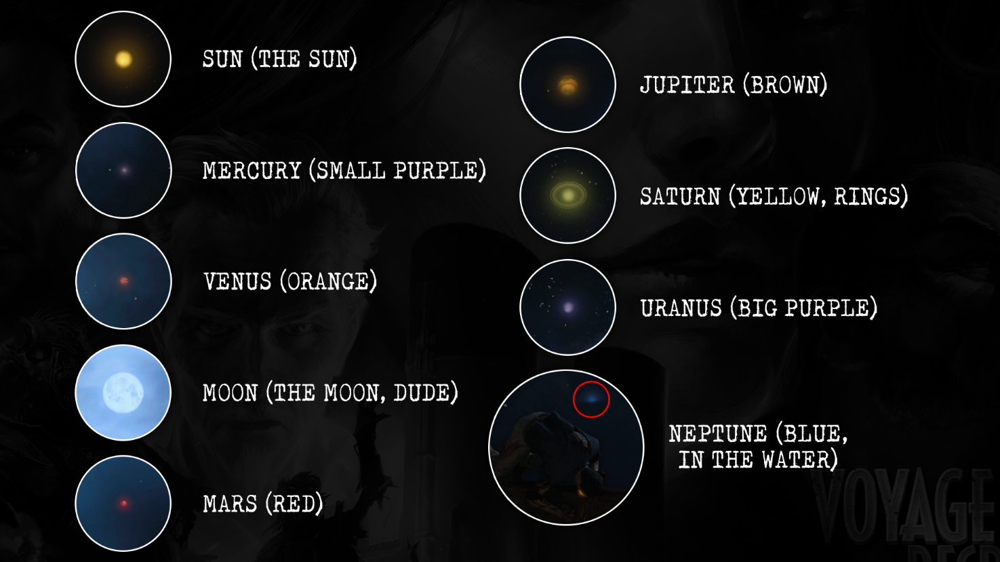

Prerequisites
- Sentinel Artifact
- PaP open
- Recommended to drain water in Cargo Hold and Engine Room
- Shield (For steps 4+)
- Acid Kraken (For steps 6+)
Recommended Setup
- Starting Setup
- Specialist - Hammer of Valhalla / Scepter of Ra
- Equipment - Wraith Fire
- Stiletto Knife on Strife
- During the Game
- Helion Salvo
- Kraken + Water/Ice Upgrade + PaP
- Upgraded Shield
Main EE - Video
Rewards:
- Find 4 symbols around the map and record the time on each of the clocks nearby (you can write the hour and the minute as the hour number. IE 9,1 for 9:05)
- Symbol Location - Clock Location
- Under the stairs when entering the Mail Room - Beside the Door when entering the Cargo Hold
- In the Cpatain's Bridge under the desk - On the wall above the steering wheel
- Above a doorway (beside spitfire wallbuy) in Upper Grand Staircase - In wooden graving on the wall opposite the symbol (middle of stairs)
- Left of 1st Class Lounge Mystery Box (on right side of cubby) - middle of lounge ontop of fireplace (small)
- On end of cabinet in the Galley - On the wall behind the symbol
- 3rd Class Berths behind boxes visible from stairs - clock on wall opposite of the symbol
- Head to the Captain's Bridge and on the 4 dials is a symbol mnatching one of the onces your recorded earlier. Input the last number in the ordered pair onto each of the wheels (point at the direction you want to move the hand and interact)
- Head to where the Sentinel Artifact was and you'll find 2 more dials. Use the key below to match the symbols and spin them to match the hour hands. (You can use the minute hands to determine which time they correspond to aswell). The other 2 dials are located in the Engine ROom in the center (4 dials there but only 2 are interactable)
- Find 4 wall outlets, each will have a specific element spewing out of it. Kill that Catalyst Zombie type. Symbol will spawn. (One can be done per round)
- Left side bedroosm in the State Rooms coming up from spawn
- Wall at the top of Grand Staircase
- Left of Zeus Perk Statue in the 1st Class Lounge
- Back of a wall in side area in Dining Hall (left side)
- Behind zombie spawn in the Aft Deck between chair legs
- 3rd Class Berths area on the wall when coming down the stairs from Poop Deck
- When the big orange symbols are on the floor, interact with them in the order Acid - Water - Electric - Fire to begin the challenges. pick up the sentinel artifact to finish the challenge after screen goes white. RECOMMENDED: Pick up the Acid part for the kraken during the Acid Challenge
- Get the Acid Kraken and shoot 9 steaming pipes to make them leak water. (might take a few shots to line up properly. will get hitmarker when hit properly.)
- 2 above PaP
- 2 to the left
- 2 more on same side but at the back of the area
- 2 more on the opposite end to the right
- One more to the right of PaP
- When the Turbine Room fills, go to the PaP location and see if it is there. If not, end the round to get it there. Interact with it to PaP the Sentinel Artifact. (can drain the water again in the Engine Room)
- Activate 9 symbols around the map (in no particular order) to spawn a planet in the sky
- In the Forecastle area on the right side of the fast travel
- Infront of you when coming dow nthe stairs from Forecastle to Mail Rooms
- on wall behind plant in State Rooms bathroom
- On side of cabinet in Captain's Bridge (by zombie spawn)
- On back wall opposite Dining Hall entrance in Grand Staircase
- Below Bedside Table in Millionaire Suites
- Inside Life Preserver on Aft Decks
- On the grate flooring in the Engine Room infront of Odin Perk statue
- Located on wall below the catwalk in the Boiler Room (opposite fast travel, beside red pipe)
- Head to the Cargo Hold and drain the water. Interact with the solar system model and remember the order the planets light up in. (Will start INfinite Zombie Round)
- Go outside and shoot the planets in the sky in the same order they lit up. After shooting a planet, you have around 30 seconds to find where it landed and pick it up.
- Neptune (Moves in and out of the water) - Lands on Aft Deck Boat (Shoot from Poop Deck)
- Jupiter (big brown streaks) - Engine room floating above the stairs (Shoot from poop deck)
- Venus (Slightly larger then mars, more orange) - Millionaire Suites on the bed (Shoot from Aft/Boat/Mid Deck)
- Moon - Outside window in Grand Staircase before entering Dining Hall (Shoot from same window)
- Mercury (small purple) - On cart infront of the stairs leading down into Mail Room (Shoot from Spawn)
- Mard (tiny red) - Boiler Room Catwalk across from Fast Travel (Shoot from Poop Deck)
- Saturn (big, yellow, rings) - Chair in Bridge Area behind wallbuy (Shoot from spawn)
- Uranus (big pruple) - Ontop of pile of luggage in the Estate Rooms bathroom (Shoot from Spawn)
- Sun (Always Last) - drop across from fast travel in Forecastle (Shoot from spawn)
- After picking up the sun, you will be put into a time trial. You need to make your way across the boat by shooting the ice blocks to destroy them. Easiest route is to stick to the rght side path (Ice kraken and Wraith Fire useful for defending, Specialist good for destroying) finishes once the ice at the end of the Poop Deck has been destroyed (Can be sniped from Aft Decks mystery box location with Helion Salvo) IF YOU FAIL: flip the round and the orb will immediately spawn back into the place. You have 30 seconds to re-activate it to try again
- Prepare yourself fully and interact with the sylbol on the floor to be teleported. Swim and interact with the Sentinel Artifact to start the boss fight




Boss Fight
- Recommended to get new shield, helion salvo fully PaP'd, all perks charged, Upgraded Ice Kraken, homunculus
- Phase 1
- Kill Everything
- Make sure to grab powerups before the start of teh next round
- Phase 2
- Kill Everything (ice circles don't do anything btw)
- Grab powerups
- Phase 3
- Survive against enemies and wait for the boss to laser down a hallway. Without getting hit, shoot the eye to damage it.
- Pickup Powerups
- Phase 4
- Damage the eye while it's shooting the beam.
- Pickup Powerups
- Phase 5
- When you hear the charging noise, you have a short amount of time to damage the boss before he insta-downs you
- Damage the boss when he beams